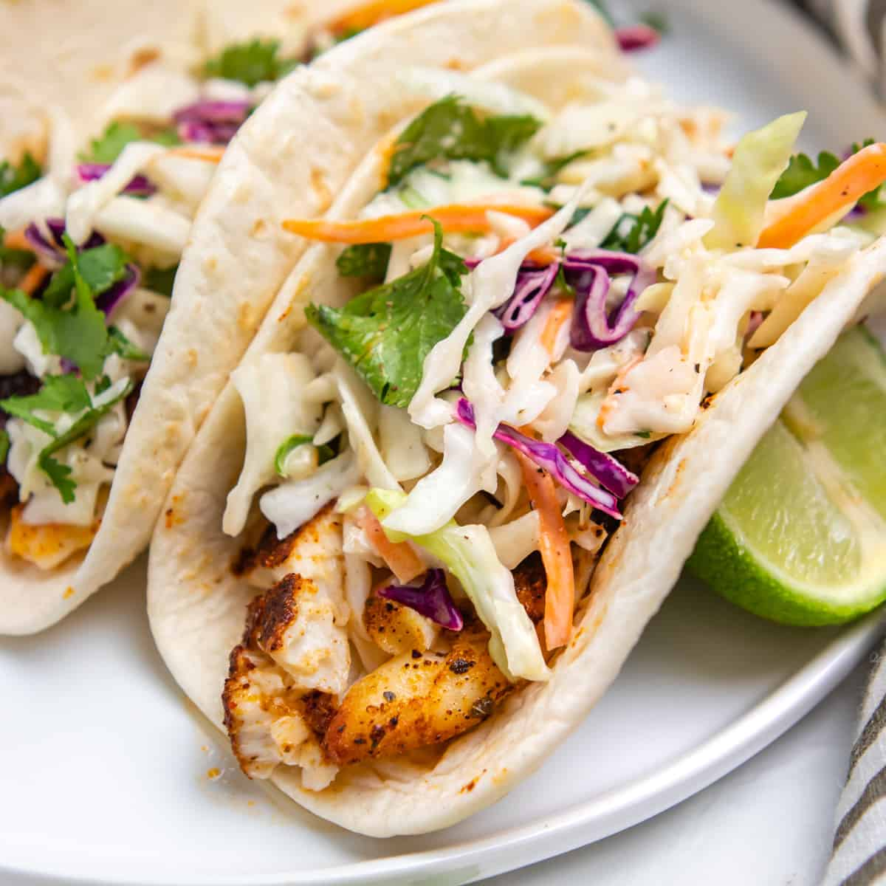

Fish Tacos

In our house Fish Tacos are family favorite! They are easy and quick to make.
This recipe uses unbreaded, broiled cod fish making this a healty choice for dinner!
Ingredients
-
1 lb cod or other white fish
-
2 T olive oil
-
1 garlic clove, chopped
-
1 1/2 t paprika
-
2 t dried parsley
-
1/2 t black pepper
-
1/2 t salt
- soft flour or corn tortillasß
- 1 cup cabbage, shredded
- 1 cup carrots, shredded
- 1 bunch fresh cilantro, chopped
- 1 large tomatoe, diced
- Hidden Valley Southwest Chipotle Ranch Dressing
- sour cream
- 1 lime
- 1 cup Kraft Mexican shredded cheese blend
Steps
- Preheat broiler to 500.
- Place fish in a 8 x 8 baking pan.
- In small bowl, mix together olive oil and garlic.
- Brush oil mixture onto fish.
- Season fish with parsley, paprika, black pepper, and salt
- Place seasoned fish under broiler for 5 minues.
- After 5 minutes, flip fish and brush again with oil mixture.
- Place fish back in broiler for another 5 minutes.
- Wrap torillas in paper towel, warm in microwave for 30 seconds.
- Break fish into pieces with a fork, and place in torilla.
- Use cabbage, carrots, cilantro, tomatoes, chipolte dressing, sour cream, and cheese as taco topping choices.
Enjoy!